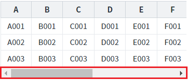
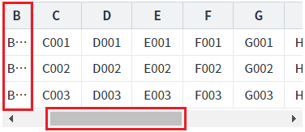
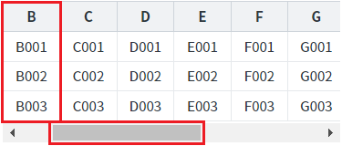
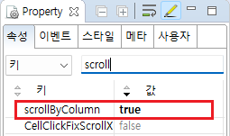

GridView의 속성 'scrollByColumn'의 설정 값 비교 예제입니다. 이 속성 GridView의 가로 스크롤이 이동될 때 브라우저에 컬럼이 표시되는 방식을 설정할 수 있습니다.
설정 값에 따른 동작은 다음과 같습니다.
true : 컬럼 단위로 표시
false : [default] 컬럼이 줄어들면서 표시
(기본 설정) 가로 스크롤 이동 시 컬럼의 너비(width)가 줄어들면서 표시
가로 스크롤 이동 시 컬럼 단위로 표시
STEP 1. 초기 상태를 확인합니다.
예제 영역 [(기본 설정) 가로 스크롤 이동 시 컬럼의 너비(width)가 줄어들면서 표시]에 구성된 GridView를 확인합니다.
GridView에 가로 스크롤이 표시된 상태입니다.그림 1.브라우저(Chrome) 실행 예시

STEP 2. 가로 스크롤을 오른쪽으로 이동합니다.
STEP 3. 실행된 결과를 확인합니다.
스크롤 이동 시 컬럼의 너비(width)가 줄어들면서 GridVeiw가 표시됩니다.
그림 2.브라우저(Chrome) 실행 예시

STEP 1. 초기 상태를 확인합니다.
예제 영역 [가로 스크롤 이동 시 컬럼 단위로 표시]에 구성된 GridView를 확인합니다.
GridView에 가로 스크롤이 표시된 상태입니다.그림 3.브라우저(Chrome) 실행 예시
STEP 2. 가로 스크롤을 오른쪽으로 이동합니다.
STEP 3. 실행된 결과를 확인합니다.
스크롤 이동 시 컬럼의 너비(width)가 유지되면서 컬럼 단위로 GridVeiw가 표시됩니다.
그림 4.브라우저(Chrome) 실행 예시

STEP1. GridView의 속성을 정의합니다.
[필수] scrollByColumn="true"
(설정 값)
- true : 컬럼 단위로 표시
- false : (기본 값) 컬럼이 줄어들면서 표시
그림 5.웹스퀘어5 SP5 스튜디오의 DataList Property View(속성창) 예시

소스 코드
<w2:gridView scrollByColumn="true" > <!-- 중략 --> </w2:gridView>
scrollByColumn
[웹스퀘어5 SP5 개발 가이드] GridView
링크 : https://docs1.inswave.com/sp5_user_guide/86bdcf48029b958b